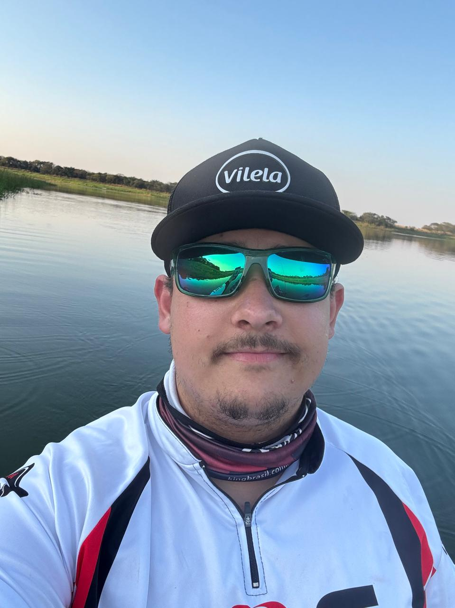

Sócio / Administrativo | CoproGraff - Gráfica e Comunicação Visual
01/2018 - atual
- Responsável pela parte administrativa e financeira da empresa.
- Acompanhamento de processos internos e apoio na organização do negócio.
Desenvolvedor Web Front-end
Estudante de Análise e Desenvolvimento de Sistemas na UTFPR, com interesse em desenvolvimento web, aprendizado contínuo e construção de soluções digitais mais úteis e acessíveis.

Comecei a cursar Análise e Desenvolvimento de Sistemas na UTFPR e me identifiquei muito com a área. Desde então, venho buscando desenvolver habilidades técnicas e práticas para crescer como profissional, especialmente no desenvolvimento front-end.
01/2018 - atual

Tenho interesse em contribuir com iniciativas ligadas à inovação, tecnologia e infraestrutura, desenvolvendo soluções que gerem impacto positivo para pessoas e negócios.
ODS 9: inovação como caminho para transformação social e econômica.